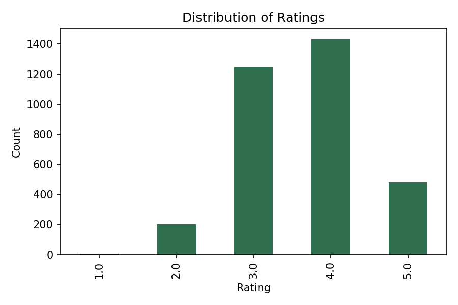
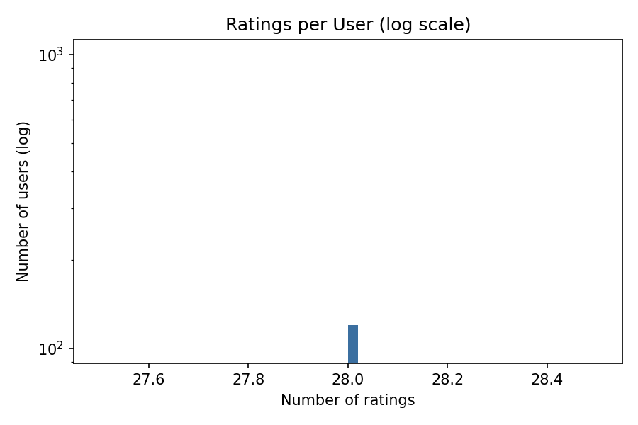
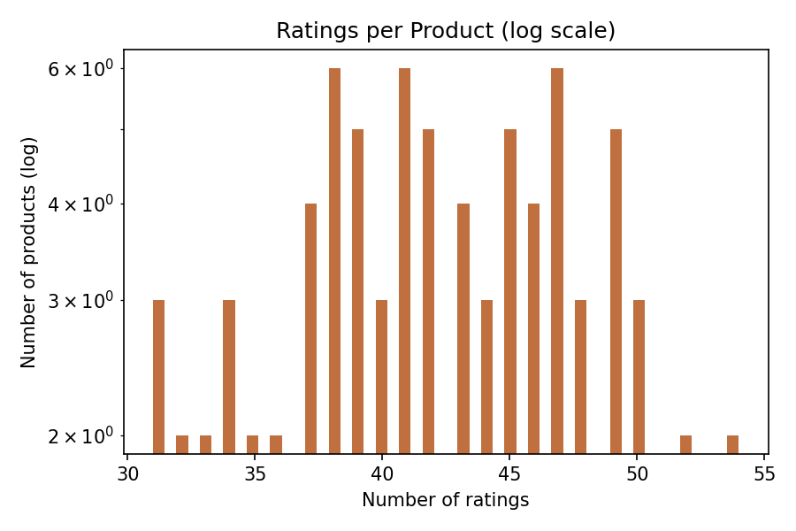
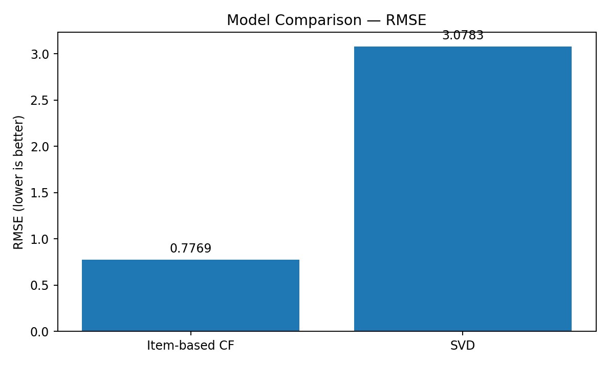
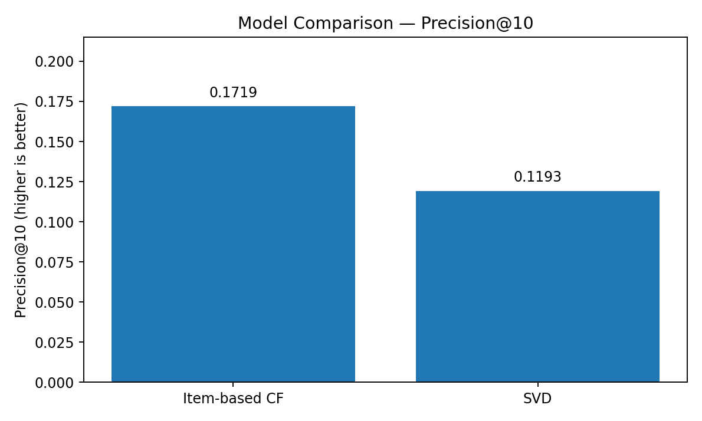

MACHINE LEARNING CASE STUDY
Amazon Product
Recommendation System
Built and evaluated a product recommendation system using user–product interactions, from exploratory analysis to model comparison and improvement recommendations.
Ratings3,360
Users120
Products80
Sparsity65%
01 / CONTEXT & OBJECTIVE
Business Problem
Trên một nền tảng thương mại điện tử, người dùng phải lựa chọn giữa rất nhiều sản phẩm. Nếu chỉ hiển thị các sản phẩm phổ biến, hệ thống không phản ánh sở thích riêng của từng người dùng và dễ làm giảm khả năng khám phá sản phẩm. Vì vậy, dự án đặt mục tiêu xây dựng một quy trình gợi ý có thể:
Phạm vi kiểm thử: gói source không chứa file Amazon Electronics gốc từ Kaggle,
vì vậy pipeline được chạy trên một bộ dữ liệu tổng hợp có cấu trúc user–product tương tự để
kiểm tra khả năng vận hành. Các kết quả dưới đây là benchmark kỹ thuật, không được trình bày
như kết quả chính thức trên dữ liệu Amazon thật.
02 / DATA & EDA
Benchmark Dataset
| Chỉ tiêu | Giá trị | Ý nghĩa |
|---|---|---|
| Số rating | 3.360 | Tổng số tương tác user–product |
| Số user | 120 | Số người dùng duy nhất |
| Số product | 80 | Số sản phẩm duy nhất |
| Rating trung bình | 3,648/5 | Mức đánh giá chung khá tích cực |
| Khoảng rating | 1–5 | Thang đo phản hồi tiêu chuẩn |
| Sparsity | 65% | 65% ô trong ma trận user–item không có rating |



Nhận định EDA
Dữ liệu recommendation thường có độ thưa cao vì mỗi user chỉ tương tác với một phần nhỏ danh mục sản phẩm. Điều này làm giảm số lượng cặp user–item có thể dùng để tính similarity hoặc học latent factors. Pipeline vì vậy sử dụng ngưỡng lọc user hoạt động và sản phẩm phổ biến để giảm nhiễu trước khi huấn luyện mô hình.
03 / METHODOLOGY
Analytical and Modeling Workflow
01Load & clean data
→02EDA & sparsity
→03Filter interactions
→04Train/test split
→05Train models
→06Evaluate
Popularity Recommender
Xếp hạng sản phẩm bằng điểm trung bình có trọng số, cân bằng giữa rating trung bình và số lượt rating. Mô hình không cá nhân hóa nhưng hữu ích cho user mới hoặc khi chưa có đủ lịch sử tương tác.
Item-based Collaborative Filtering
Xây dựng ma trận user–item, tính cosine similarity giữa các sản phẩm và đề xuất các sản phẩm tương tự những sản phẩm user đã đánh giá cao. Cấu hình sử dụng 20 sản phẩm lân cận.
SVD Matrix Factorization
Phân rã ma trận rating thành các latent factors của user và product, sau đó tái tạo rating dự đoán cho các cặp chưa quan sát. Cấu hình benchmark sử dụng 20 factors.
04 / RESULTS
Model Comparison
| Mô hình | RMSE | Precision@10 | Đánh giá |
|---|---|---|---|
| Item-based CF | 0,7769 | 0,1719 | Tốt nhất trong lần benchmark này |
| SVD Matrix Factorization | 3,0783 | 0,1193 | Cần tuning và rà soát bước demean |


1. Item-based CF dẫn đầu
RMSE 0,7769 thấp hơn nhiều so với SVD và Precision@10 đạt 0,1719. Điều này cho thấy cấu trúc similarity giữa sản phẩm phù hợp với bộ dữ liệu benchmark hiện tại hơn phương pháp phân rã ma trận ở cấu hình mặc định.
2. SVD chưa được tối ưu
SVD đạt RMSE 3,0783, cho thấy dự đoán rating chưa ổn định. Nguyên nhân có thể đến từ số factors, cách điền missing values bằng 0 trước khi demean, thiếu regularization và chưa tuning theo validation set.
3. Precision vẫn còn thấp
Precision@10 của mô hình tốt nhất là 17,19%, nghĩa là trung bình chưa đến 2 trong 10 sản phẩm đề xuất trùng với các sản phẩm liên quan trong tập test. Hệ thống mới ở mức prototype, chưa phù hợp để triển khai sản xuất.
Ví dụ recommendation cho user U110
P078P008P048P003P060
P045P073P076P069P032
Đây là top 10 sản phẩm được Item-based CF đề xuất dựa trên similarity với các sản phẩm mà user U110 đã rating.
05 / RECOMMENDATIONS
Improvement and Deployment Roadmap
Conclusion
Dự án đã xây dựng thành công pipeline recommendation từ EDA, preprocessing, mô hình hóa đến đánh giá. Trong benchmark hiện tại, Item-based CF là lựa chọn phù hợp nhất. Tuy nhiên, kết quả vẫn mang tính thử nghiệm; bước quan trọng tiếp theo là chạy trên dữ liệu Amazon thật, cải thiện quy trình validation và xây dựng hybrid model trước khi xem xét triển khai ở quy mô thực tế.